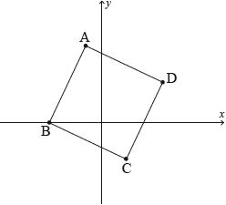

HL Paper 1
Find the sum of the infinite geometric sequence 27, −9, 3, −1, ... .
Use mathematical induction to prove that for \(n \in {\mathbb{Z}^ + }\) ,
\[a + ar + a{r^2} + ... + a{r^{n - 1}} = \frac{{a(1 - {r^n})}}{{1 - r}}.\]
Find integer values of \(m\) and \(n\) for which
\[m - n{\log _3}2 = 10{\log _9}6\]
Expand \({(x + h)^3}\).
Hence find the derivative of \(f(x) = {x^3}\) from first principles.
The fifth term of an arithmetic sequence is equal to 6 and the sum of the first 12 terms is 45.
Find the first term and the common difference.
The complex numbers \({z_1} = 2 - 2{\text{i}}\) and \({{\text{z}}_2} = 1 - \sqrt 3 {\text{i}}\) are represented by the points A and B respectively on an Argand diagram. Given that O is the origin,
Find AB, giving your answer in the form \(a\sqrt {b - \sqrt 3 } \) , where a , \(b \in {\mathbb{Z}^ + }\) .
Calculate \({\rm{A\hat OB}}\) in terms of \(\pi \).
Let \(z = 1 - \cos 2\theta - {\text{i}}\sin 2\theta ,{\text{ }}z \in \mathbb{C},{\text{ }}0 \leqslant \theta \leqslant \pi \).
Solve \(2\sin (x + 60^\circ ) = \cos (x + 30^\circ ),{\text{ }}0^\circ \leqslant x \leqslant 180^\circ \).
Show that \(\sin 105^\circ + \cos 105^\circ = \frac{1}{{\sqrt 2 }}\).
Find the modulus and argument of \(z\) in terms of \(\theta \). Express each answer in its simplest form.
Hence find the cube roots of \(z\) in modulus-argument form.
Consider the distinct complex numbers \(z = a + {\text{i}}b,\,\,w = c + {\text{i}}d\), where \(a,\,b,\,c,\,d \in \mathbb{R}\).
Find the real part of \(\frac{{z + w}}{{z - w}}\).
Find the value of the real part of \(\frac{{z + w}}{{z - w}}\) when \(\left| z \right| = \left| w \right|\).
Consider the complex number \(\omega = \frac{{z + {\text{i}}}}{{z + 2}}\), where \(z = x + {\text{i}}y\) and \({\text{i}} = \sqrt { - 1} \).
(a) If \(\omega = {\text{i}}\), determine z in the form \(z = r\,{\text{cis}}\,\theta \).
(b) Prove that \(\omega = \frac{{({x^2} + 2x + {y^2} + y) + {\text{i}}(x + 2y + 2)}}{{{{(x + 2)}^2} + {y^2}}}\).
(c) Hence show that when \(\operatorname{Re} (\omega) = 1\) the points \((x,{\text{ }}y)\) lie on a straight line, \({l_1}\), and write down its gradient.
(d) Given \(\arg (z) = \arg (\omega) = \frac{\pi }{4}\), find \(\left| z \right|\).
Find three distinct roots of the equation \(8{z^3} + 27 = 0,{\text{ }}z \in \mathbb{C}\) giving your answers in modulus-argument form.
The roots are represented by the vertices of a triangle in an Argand diagram.
Show that the area of the triangle is \(\frac{{27\sqrt 3 }}{{16}}\).
Consider the complex numbers \(z = 1 + 2{\text{i}}\) and \(w = 2 + a{\text{i}}\) , where \(a \in \mathbb{R}\) .
Find a when
(a) \(\left| w \right| = 2\left| z \right|;\) ;
(b) \({\text{Re}}(zw) = 2\operatorname{Im} (zw)\) .
In the following Argand diagram the point A represents the complex number \( - 1 + 4{\text{i}}\) and the point B represents the complex number \( - 3 + 0{\text{i}}\). The shape of ABCD is a square. Determine the complex numbers represented by the points C and D.

Use mathematical induction to prove that \(n({n^2} + 5)\) is divisible by 6 for \(n \in {\mathbb{Z}^ + }\).
It is given that \({\text{lo}}{{\text{g}}_2}\,y + {\text{lo}}{{\text{g}}_4}\,x + {\text{lo}}{{\text{g}}_4}\,2x = 0\).
Show that \({\text{lo}}{{\text{g}}_{{r^2}}}x = \frac{1}{2}{\text{lo}}{{\text{g}}_r}\,x\) where \(r,\,x \in {\mathbb{R}^ + }\).
Express \(y\) in terms of \(x\). Give your answer in the form \(y = p{x^q}\), where p , q are constants.
The region R, is bounded by the graph of the function found in part (b), the x-axis, and the lines \(x = 1\) and \(x = \alpha \) where \(\alpha > 1\). The area of R is \(\sqrt 2 \).
Find the value of \(\alpha \).
An 81 metre rope is cut into n pieces of increasing lengths that form an arithmetic sequence with a common difference of d metres. Given that the lengths of the shortest and longest pieces are 1.5 metres and 7.5 metres respectively, find the values of n and d .
Given that \(\frac{z}{{z + 2}} = 2 - {\text{i}}\) , \(z \in \mathbb{C}\) , find z in the form \(a + {\text{i}}b\) .
Given that \((4 - 5{\text{i}})m + 4n = 16 + 15{\text{i}}\) , where \({{\text{i}}^2} = - 1\), find m and n if
m and n are real numbers;
m and n are conjugate complex numbers.
Consider the complex number \(z = \cos \theta + {\text{i}}\sin \theta \).
The region S is bounded by the curve \(y = \sin x{\cos ^2}x\) and the x-axis between \(x = 0\) and \(x = \frac{\pi }{2}\).
Use De Moivre’s theorem to show that \({z^n} + {z^{ - n}} = 2\cos n\theta ,{\text{ }}n \in {\mathbb{Z}^ + }\).
Expand \({\left( {z + {z^{ - 1}}} \right)^4}\).
Hence show that \({\cos ^4}\theta = p\cos 4\theta + q\cos 2\theta + r\), where \(p,{\text{ }}q\) and \(r\) are constants to be determined.
Show that \({\cos ^6}\theta = \frac{1}{{32}}\cos 6\theta + \frac{3}{{16}}\cos 4\theta + \frac{{15}}{{32}}\cos 2\theta + \frac{5}{{16}}\).
Hence find the value of \(\int_0^{\frac{\pi }{2}} {{{\cos }^6}\theta {\text{d}}\theta } \).
S is rotated through \(2\pi \) radians about the x-axis. Find the value of the volume generated.
(i) Write down an expression for the constant term in the expansion of \({\left( {z + {z^{ - 1}}} \right)^{2k}}\), \(k \in {\mathbb{Z}^ + }\).
(ii) Hence determine an expression for \(\int_0^{\frac{\pi }{2}} {{{\cos }^{2k}}\theta {\text{d}}\theta } \) in terms of k.
The geometric sequence u1, u2, u3, … has common ratio r.
Consider the sequence \(A = \left\{ {{a_n} = {\text{lo}}{{\text{g}}_2}\left| {{u_n}} \right|{\text{:}}\,n \in {\mathbb{Z}^ + }} \right\}\).
Show that A is an arithmetic sequence, stating its common difference d in terms of r.
A particular geometric sequence has u1 = 3 and a sum to infinity of 4.
Find the value of d.
Consider the following equations, where a , \(b \in \mathbb{R}:\)
\(x + 3y + (a - 1)z = 1\)
\(2x + 2y + (a - 2)z = 1\)
\(3x + y + (a - 3)z = b.\)
If each of these equations defines a plane, show that, for any value of a , the planes do not intersect at a unique point.
Find the value of b for which the intersection of the planes is a straight line.
Consider the complex numbers \({z_1} = 1 + \sqrt 3 {\text{i, }}{z_2} = 1 + {\text{i}}\) and \(w = \frac{{{z_1}}}{{{z_2}}}\).
By expressing \({z_1}\) and \({z_2}\) in modulus-argument form write down the modulus of \(w\);
By expressing \({z_1}\) and \({z_2}\) in modulus-argument form write down the argument of \(w\).
Find the smallest positive integer value of \(n\), such that \({w^n}\) is a real number.
Consider the complex numbers
\({z_1} = 2\sqrt 3 {\text{cis}}\frac{{3\pi }}{2}\) and \({z_2} = - 1 + \sqrt 3 {\text{i }}\) .
(i) Write down \({z_1}\) in Cartesian form.
(ii) Hence determine \({({z_1} + {z_2})^ * }\) in Cartesian form.
(i) Write \({z_2}\) in modulus-argument form.
(ii) Hence solve the equation \({z^3} = {z_2}\) .
Let \(z = r\,{\text{cis}}\theta \) , where \(r \in {\mathbb{R}^ + }\) and \(0 \leqslant \theta < 2\pi \) . Find all possible values of r and \(\theta \) ,
(i) if \({z^2} = {(1 + {z_2})^2}\);
(ii) if \(z = - \frac{1}{{{z_2}}}\).
Find the smallest positive value of n for which \({\left( {\frac{{{z_1}}}{{{z_2}}}} \right)^n} \in {\mathbb{R}^ + }\) .
(a) The sum of the first six terms of an arithmetic series is 81. The sum of its first eleven terms is 231. Find the first term and the common difference.
(b) The sum of the first two terms of a geometric series is 1 and the sum of its first four terms is 5. If all of its terms are positive, find the first term and the common ratio.
(c) The \({r^{{\text{th}}}}\) term of a new series is defined as the product of the \({r^{{\text{th}}}}\) term of the arithmetic series and the \({r^{{\text{th}}}}\) term of the geometric series above. Show that the \({r^{{\text{th}}}}\) term of this new series is \((r + 1){2^{r - 1}}\) .
Using mathematical induction, prove that
\[\sum\limits_{r = 1}^n {(r + 1){2^{r - 1}} = n{2^n},{\text{ }}n \in {\mathbb{Z}^ + }.} \]
The 1st, 4th and 8th terms of an arithmetic sequence, with common difference \(d\), \(d \ne 0\), are the first three terms of a geometric sequence, with common ratio \(r\). Given that the 1st term of both sequences is 9 find
the value of \(d\);
the value of \(r\);
Show that \(\sin \left( {\theta + \frac{\pi }{2}} \right) = \cos \theta \).
Consider \(f(x) = \sin (ax)\) where \(a\) is a constant. Prove by mathematical induction that \({f^{(n)}}(x) = {a^n}\sin \left( {ax + \frac{{n\pi }}{2}} \right)\) where \(n \in {\mathbb{Z}^ + }\) and \({f^{(n)}}(x)\) represents the \({{\text{n}}^{{\text{th}}}}\) derivative of \(f(x)\).
Solve the equation \(2 - {\log _3}(x + 7) = {\log _{\tfrac{1}{3}}}2x\) .
Solve the equation \({4^x} + {2^{x + 2}} = 3\).
Write down and simplify the expansion of \({(2 + x)^4}\) in ascending powers of \(x\).
Hence find the exact value of \({(2.1)^4}\).
A geometric sequence has first term a, common ratio r and sum to infinity 76. A second geometric sequence has first term a, common ratio \({r^3}\) and sum to infinity 36.
Find r.
The sum of the first two terms of a geometric series is 10 and the sum of the first four terms is 30.
(a) Show that the common ratio \(r\) satisfies \({r^2} = 2\).
(b) Given \(r = \sqrt 2 \)
(i) find the first term;
(ii) find the sum of the first ten terms.
Let \(z = \cos \theta + i\sin \theta \).
Use de Moivre’s theorem to find the value of \({\left( {\cos \left( {\frac{\pi }{3}} \right) + {\text{i}}\sin \left( {\frac{\pi }{3}} \right)} \right)^3}\).
Use mathematical induction to prove that
\[{(\cos \theta - {\text{i}}\sin \theta )^n} = \cos n\theta - {\text{i}}\sin n\theta {\text{ for }}n \in {\mathbb{Z}^ + }.\]
Find an expression in terms of \(\theta \) for \({(z)^n} + {(z{\text{*}})^n},{\text{ }}n \in {\mathbb{Z}^ + }\) where \(z{\text{*}}\) is the complex conjugate of \(z\).
(i) Show that \(zz{\text{*}} = 1\).
(ii) Write down the binomial expansion of \({(z + z{\text{*}})^3}\) in terms of \(z\) and \(z{\text{*}}\).
(iii) Hence show that \(\cos 3\theta = 4{\cos ^3}\theta - 3\cos \theta \).
Hence solve \(4{\cos ^3}\theta - 2{\cos ^2}\theta - 3\cos \theta + 1 = 0\) for \(0 \leqslant \theta < \pi \).
(i) Express each of the complex numbers \({z_1} = \sqrt 3 + {\text{i, }}{z_2} = - \sqrt 3 + {\text{i}}\) and \({z_3} = - 2{\text{i}}\) in modulus-argument form.
(ii) Hence show that the points in the complex plane representing \({z_1}\), \({z_2}\) and \({z_3}\) form the vertices of an equilateral triangle.
(iii) Show that \({\text{z}}_1^{3n} + z_2^{3n} = 2z_3^{3n}\) where \(n \in \mathbb{N}\).
(i) State the solutions of the equation \({z^7} = 1\) for \(z \in \mathbb{C}\), giving them in modulus-argument form.
(ii) If w is the solution to \({z^7} = 1\) with least positive argument, determine the argument of 1 + w. Express your answer in terms of \(\pi \).
(iii) Show that \({z^2} - 2z\cos \left( {\frac{{2\pi }}{7}} \right) + 1\) is a factor of the polynomial \({z^7} - 1\). State the two other quadratic factors with real coefficients.
Consider the complex numbers \({z_1} = 2{\text{cis}}150^\circ \) and \({z_2} = - 1 + {\text{i}}\) .
Calculate \(\frac{{{z_1}}}{{{z_2}}}\) giving your answer both in modulus-argument form and Cartesian form.
Using your results, find the exact value of tan 75° , giving your answer in the form \(a + \sqrt b \) , a , \(b \in {\mathbb{Z}^ + }\) .
Show that \(\frac{1}{{\sqrt n + \sqrt {n + 1} }} = \sqrt {n + 1} - \sqrt n \) where \(n \ge 0,{\text{ }}n \in \mathbb{Z}\).
Hence show that \(\sqrt 2 - 1 < \frac{1}{{\sqrt 2 }}\).
Prove, by mathematical induction, that \(\sum\limits_{r = 1}^{r = n} {\frac{1}{{\sqrt r }} > \sqrt n } \) for \(n \ge 2,{\text{ }}n \in \mathbb{Z}\).
Prove by mathematical induction \(\sum\limits_{r = 1}^n {r(r!) = (n + 1)! - 1} \), \(n \in {\mathbb{Z}^ + }\).
The cubic equation \({x^3} + p{x^2} + qx + c = 0\), has roots \(\alpha ,{\text{ }}\beta ,{\text{ }}\gamma \). By expanding \((x - \alpha )(x - \beta )(x - \gamma )\) show that
(i) \(p = - (\alpha + \beta + \gamma )\);
(ii) \(q = \alpha \beta + \beta \gamma + \gamma \alpha \);
(iii) \(c = - \alpha \beta \gamma \).
It is now given that \(p = - 6\) and \(q = 18\) for parts (b) and (c) below.
(i) In the case that the three roots \(\alpha ,{\text{ }}\beta ,{\text{ }}\gamma \) form an arithmetic sequence, show that one of the roots is \(2\).
(ii) Hence determine the value of \(c\).
In another case the three roots \(\alpha ,{\text{ }}\beta ,{\text{ }}\gamma \) form a geometric sequence. Determine the value of \(c\).
Let \(\{ {u_n}\} ,{\text{ }}n \in {\mathbb{Z}^ + }\), be an arithmetic sequence with first term equal to \(a\) and common difference of \(d\), where \(d \ne 0\). Let another sequence \(\{ {v_n}\} ,{\text{ }}n \in {\mathbb{Z}^ + }\), be defined by \({v_n} = {2^{{u_n}}}\).
(i) Show that \(\frac{{{v_{n + 1}}}}{{{v_n}}}\) is a constant.
(ii) Write down the first term of the sequence \(\{ {v_n}\} \).
(iii) Write down a formula for \({v_n}\) in terms of \(a\), \(d\) and \(n\).
Let \({S_n}\) be the sum of the first \(n\) terms of the sequence \(\{ {v_n}\} \).
(i) Find \({S_n}\), in terms of \(a\), \(d\) and \(n\).
(ii) Find the values of \(d\) for which \(\sum\limits_{i = 1}^\infty {{v_i}} \) exists.
You are now told that \(\sum\limits_{i = 1}^\infty {{v_i}} \) does exist and is denoted by \({S_\infty }\).
(iii) Write down \({S_\infty }\) in terms of \(a\) and \(d\) .
(iv) Given that \({S_\infty } = {2^{a + 1}}\) find the value of \(d\) .
Let \(\{ {w_n}\} ,{\text{ }}n \in {\mathbb{Z}^ + }\), be a geometric sequence with first term equal to \(p\) and common ratio \(q\), where \(p\) and \(q\) are both greater than zero. Let another sequence \(\{ {z_n}\} \) be defined by \({z_n} = \ln {w_n}\).
Find \(\sum\limits_{i = 1}^n {{z_i}} \) giving your answer in the form \(\ln k\) with \(k\) in terms of \(n\), \(p\) and \(q\).
Express \(\frac{1}{{{{(1 - {\text{i}}\sqrt 3 )}^3}}}{\text{ in the form }}\frac{a}{b}{\text{ where }}a,{\text{ }}b \in \mathbb{Z}\) .
Find the value of k if \({\sum\limits_{r = 1}^\infty{k\left( {\frac{1}{3}} \right)}^r} = 7\).
Given that \({z_1} = 2\) and \({z_2} = 1 + \sqrt 3 {\text{i}}\) are roots of the cubic equation \({z^3} + b{z^2} + cz + d = 0\)
where b, c, \(d \in \mathbb{R}\),
(a) write down the third root, \({z_3}\), of the equation;
(b) find the values of b, c and d ;
(c) write \({z_2}\) and \({z_3}\) in the form \(r{{\text{e}}^{{\text{i}}\theta }}\).
Consider the function \({f_n}(x) = (\cos 2x)(\cos 4x) \ldots (\cos {2^n}x),{\text{ }}n \in {\mathbb{Z}^ + }\).
Determine whether \({f_n}\) is an odd or even function, justifying your answer.
By using mathematical induction, prove that
\({f_n}(x) = \frac{{\sin {2^{n + 1}}x}}{{{2^n}\sin 2x}},{\text{ }}x \ne \frac{{m\pi }}{2}\) where \(m \in \mathbb{Z}\).
Hence or otherwise, find an expression for the derivative of \({f_n}(x)\) with respect to \(x\).
Show that, for \(n > 1\), the equation of the tangent to the curve \(y = {f_n}(x)\) at \(x = \frac{\pi }{4}\) is \(4x - 2y - \pi = 0\).
Use the method of mathematical induction to prove that \({4^n} + 15n - 1\) is divisible by 9 for \(n \in {\mathbb{Z}^ + }\).
Expand and simplify \({\left( {{x^2} - \frac{2}{x}} \right)^4}\).
Expand \({(3 - x)^4}\) in ascending powers of \(x\) and simplify your answer.
(a) Consider the following sequence of equations.
\(1 \times 2 = \frac{1}{3}(1 \times 2 \times 3),\)
\(1 \times 2 + 2 \times 3 = \frac{1}{3}(2 \times 3 \times 4),\)
\(1 \times 2 + 2 \times 3 + 3 \times 4 = \frac{1}{3}(3 \times 4 \times 5),\)
\( \ldots {\text{ .}}\)
(i) Formulate a conjecture for the \({n^{{\text{th}}}}\) equation in the sequence.
(ii) Verify your conjecture for n = 4 .
(b) A sequence of numbers has the \({n^{{\text{th}}}}\) term given by \({u_n} = {2^n} + 3,{\text{ }}n \in {\mathbb{Z}^ + }\). Bill conjectures that all members of the sequence are prime numbers. Show that Bill’s conjecture is false.
(c) Use mathematical induction to prove that \(5 \times {7^n} + 1\) is divisible by 6 for all \(n \in {\mathbb{Z}^ + }\).
(i) Show that \({(1 + {\text{i}}\tan \theta )^n} + {(1 - {\text{i}}\tan \theta )^n} = \frac{{2\cos n\theta }}{{{{\cos }^n}\theta }},\;\;\;\cos \theta \ne 0\).
(ii) Hence verify that \({\text{i}}\tan \frac{{3\pi }}{8}\) is a root of the equation \({(1 + z)^4} + {(1 - z)^4} = 0,\;\;\;z \in \mathbb{C}\).
(iii) State another root of the equation \({(1 + z)^4} + {(1 - z)^4} = 0,\;\;\;z \in \mathbb{C}\).
(i) Use the double angle identity \(\tan 2\theta = \frac{{2\tan \theta }}{{1 - {{\tan }^2}\theta }}\) to show that \(\tan \frac{\pi }{8} = \sqrt 2 - 1\).
(ii) Show that \(\cos 4x = 8{\cos ^4}x - 8{\cos ^2}x + 1\).
(iii) Hence find the value of \(\int_0^{\frac{\pi }{8}} {\frac{{2\cos 4x}}{{{{\cos }^2}x}}{\text{d}}x} \).
Consider the equation \(9{x^3} - 45{x^2} + 74x - 40 = 0\) .
Write down the numerical value of the sum and of the product of the roots of this equation.
The roots of this equation are three consecutive terms of an arithmetic sequence.
Taking the roots to be \(\alpha {\text{ , }}\alpha \pm \beta \) , solve the equation.
(a) Show that the following system of equations has an infinite number of solutions.
\(x + y + 2z = - 2\)
\(3x - y + 14z = 6\)
\(x + 2y = - 5\)
The system of equations represents three planes in space.
(b) Find the parametric equations of the line of intersection of the three planes.
(a) Show that \(\sin 2nx = \sin \left( {(2n + 1)x} \right)\cos x - \cos \left( {(2n + 1)x} \right)\sin x\).
(b) Hence prove, by induction, that
\[\cos x + \cos 3x + \cos 5x + \ldots + \cos \left( {(2n - 1)x} \right) = \frac{{\sin 2nx}}{{2\sin x}},\]
for all \(n \in {\mathbb{Z}^ + }{\text{, }}\sin x \ne 0\).
(c) Solve the equation \(\cos x + \cos 3x = \frac{1}{2},{\text{ }}0 < x < \pi \).
Find the cube roots of i in the form \(a + b{\text{i}}\), where \(a,{\text{ }}b \in \mathbb{R}\).
Factorize \({z^3} + 1\) into a linear and quadratic factor.
Let \(\gamma = \frac{{1 + {\text{i}}\sqrt 3 }}{2}\).
(i) Show that \(\gamma \) is one of the cube roots of −1.
(ii) Show that \({\gamma ^2} = \gamma - 1\).
(iii) Hence find the value of \({(1 - \gamma )^6}\).
An arithmetic sequence \({u_1}{\text{, }}{u_2}{\text{, }}{u_3} \ldots \) has \({u_1} = 1\) and common difference \(d \ne 0\). Given that \({u_2}{\text{, }}{u_3}\) and \({u_6}\) are the first three terms of a geometric sequence
Given that \({u_N} = - 15\)
find the value of \(d\).
determine the value of \(\sum\limits_{r = 1}^N {{u_r}} \).
If \({z_1} = a + a\sqrt 3 i\) and \({z_2} = 1 - i\), where a is a real constant, express \({z_1}\) and \({z_2}\) in the form \(r\,{\text{cis}}\,\theta \), and hence find an expression for \({\left( {\frac{{{z_1}}}{{{z_2}}}} \right)^6}\) in terms of a and i.
Let \(w = \cos \frac{{2\pi }}{7} + {\text{i}}\sin \frac{{2\pi }}{7}\).
Consider the quadratic equation \({z^2} + bz + c = 0\) where \(b,{\text{ }}c \in \mathbb{R},{\text{ }}z \in \mathbb{C}\). The roots of this equation are \(\alpha \) and \(\alpha *\) where \(\alpha *\) is the complex conjugate of \(\alpha \).
Verify that \(w\) is a root of the equation \({z^7} - 1 = 0,{\text{ }}z \in \mathbb{C}\).
(i) Expand \((w - 1)(1 + w + {w^2} + {w^3} + {w^4} + {w^5} + {w^6})\).
(ii) Hence deduce that \(1 + w + {w^2} + {w^3} + {w^4} + {w^5} + {w^6} = 0\).
Write down the roots of the equation \({z^7} - 1 = 0,{\text{ }}z \in \mathbb{C}\) in terms of \(w\) and plot these roots on an Argand diagram.
(i) Given that \(\alpha = w + {w^2} + {w^4}\), show that \(\alpha * = {w^6} + {w^5} + {w^3}\).
(ii) Find the value of \(b\) and the value of \(c\).
Using the values for \(b\) and \(c\) obtained in part (d)(ii), find the imaginary part of \(\alpha \), giving your answer in surd form.
Let \(\omega \) be one of the non-real solutions of the equation \({z^3} = 1\).
Consider the complex numbers \(p = 1 - 3{\text{i}}\) and \(q = x + (2x + 1){\text{i}}\), where \(x \in \mathbb{R}\).
Determine the value of
(i) \(1 + \omega + {\omega ^2}\);
(ii) \(1 + \omega {\text{*}} + {(\omega {\text{*}})^2}\).
Show that \((\omega - 3{\omega ^2})({\omega ^2} - 3\omega ) = 13\).
Find the values of \(x\) that satisfy the equation \(\left| p \right| = \left| q \right|\).
Solve the inequality \(\operatorname{Re} (pq) + 8 < {\left( {\operatorname{Im} (pq)} \right)^2}\).
Expand and simplify \({\left( {x - \frac{2}{x}} \right)^4}\).
Hence determine the constant term in the expansion \((2{x^2} + 1){\left( {x - \frac{2}{x}} \right)^4}\).
Find the value of \(\sin \frac{\pi }{4} + \sin \frac{{3\pi }}{4} + \sin \frac{{5\pi }}{4} + \sin \frac{{7\pi }}{4} + \sin \frac{{9\pi }}{4}\).
Show that \(\frac{{1 - \cos 2x}}{{2\sin x}} \equiv \sin x,{\text{ }}x \ne k\pi \) where \(k \in \mathbb{Z}\).
Use the principle of mathematical induction to prove that
\(\sin x + \sin 3x + \ldots + \sin (2n - 1)x = \frac{{1 - \cos 2nx}}{{2\sin x}},{\text{ }}n \in {\mathbb{Z}^ + },{\text{ }}x \ne k\pi \) where \(k \in \mathbb{Z}\).
Hence or otherwise solve the equation \(\sin x + \sin 3x = \cos x\) in the interval \(0 < x < \pi \).
A box contains four red balls and two white balls. Darren and Marty play a game by each taking it in turn to take a ball from the box, without replacement. The first player to take a white ball is the winner.
Darren plays first, find the probability that he wins.
The game is now changed so that the ball chosen is replaced after each turn.
Darren still plays first.
Show that the probability of Darren winning has not changed.
The sum of the first \(n\) terms of a sequence \(\{ {u_n}\} \) is given by \({S_n} = 3{n^2} - 2n\), where \(n \in {\mathbb{Z}^ + }\).
Write down the value of \({u_1}\).
Find the value of \({u_6}\).
Prove that \(\{ {u_n}\} \) is an arithmetic sequence, stating clearly its common difference.
A given polynomial function is defined as \(f(x) = {a_0} + {a_1}x + {a_2}{x^2} + \ldots + {a_n}{x^n}\). The roots of the polynomial equation \(f(x) = 0\) are consecutive terms of a geometric sequence with a common ratio of \(\frac{1}{2}\) and first term 2.
Given that \({a_{n - 1}} = - 63\) and \({a_n} = 16\) find
the degree of the polynomial;
the value of \({a_0}\).
Solve \({\left( {{\text{ln}}\,x} \right)^2} - \left( {{\text{ln}}\,2} \right)\left( {{\text{ln}}\,x} \right) < 2{\left( {{\text{ln}}\,2} \right)^2}\).
A set of positive integers {\(1,2,3,4,5,6,7,8,9\)} is used to form a pack of nine cards.
Each card displays one positive integer without repetition from this set. Grace wishes to select four cards at random from this pack of nine cards.
Find the number of selections Grace could make if the largest integer drawn among the four cards is either a \(5\), a \(6\) or a \(7\).
Find the number of selections Grace could make if at least two of the four integers drawn are even.
Solve the equation \({\log _2}(x + 3) + {\log _2}(x - 3) = 4\).
Find the solution of \({\log _2}x - {\log _2}5 = 2 + {\log _2}3\).
Consider the following system of equations:
\[x + y + z = 1\]
\[2x + 3y + z = 3\]
\[x + 3y - z = \lambda \]
where \(\lambda \in \mathbb{R}\) .
Show that this system does not have a unique solution for any value of \(\lambda \) .
(i) Determine the value of \(\lambda \) for which the system is consistent.
(ii) For this value of \(\lambda \) , find the general solution of the system.
Solve the equation \({z^3} = 8{\text{i}},{\text{ }}z \in \mathbb{C}\) giving your answers in the form \(z = r(\cos \theta + {\text{i}}\sin \theta )\) and in the form \(z = a + b{\text{i}}\) where \(a,{\text{ }}b \in \mathbb{R}\).
Consider the complex numbers \({z_1} = 1 + {\text{i}}\) and \({z_2} = 2\left( {\cos \left( {\frac{\pi }{2}} \right) + {\text{i}}\sin \left( {\frac{\pi }{6}} \right)} \right)\).
(i) Write \({z_1}\) in the form \(r(\cos \theta + {\text{i}}\sin \theta )\).
(ii) Calculate \({z_1}{z_2}\) and write in the form \(z = a + b{\text{i}}\) where \(a,{\text{ }}b \in \mathbb{R}\).
(iii) Hence find the value of \(\tan \frac{{5\pi }}{{12}}\) in the form \(c + d\sqrt 3 \), where \(c,{\text{ }}d \in \mathbb{Z}\).
(iv) Find the smallest value \(p > 0\) such that \({({z_2})^p}\) is a positive real number.
Let \(z = x + {\text{i}}y\) be any non-zero complex number.
(i) Express \(\frac{1}{z}\) in the form \(u + {\text{i}}v\) .
(ii) If \(z + \frac{1}{z} = k\) , \(k \in \mathbb{R}\) , show that either y = 0 or \({x^2} + {y^2} = 1\).
(iii) Show that if \({x^2} + {y^2} = 1\) then \(\left| k \right| \leqslant 2\) .
Let \(w = \cos \theta + {\text{i}}\sin \theta \) .
(i) Show that \({w^n} + {w^{ - n}} = 2\cos n\theta \) , \(n \in \mathbb{Z}\) .
(ii) Solve the equation \(3{w^2} - w + 2 - {w^{ - 1}} + 3{w^{ - 2}} = 0\), giving the roots in the form \(x + {\text{i}}y\) .
Determine the roots of the equation \({(z + 2{\text{i}})^3} = 216{\text{i}}\), \(z \in \mathbb{C}\), giving the answers in the form \(z = a\sqrt 3 + b{\text{i}}\) where \(a,{\text{ }}b \in \mathbb{Z}\).
The complex number z is defined as \(z = \cos \theta + {\text{i}}\sin \theta \) .
(a) State de Moivre’s theorem.
(b) Show that \({z^n} - \frac{1}{{{z^n}}} = 2{\text{i}}\sin (n\theta )\) .
(c) Use the binomial theorem to expand \({\left( {z - \frac{1}{z}} \right)^5}\) giving your answer in simplified form.
(d) Hence show that \(16{\sin ^5}\theta = \sin 5\theta - 5\sin 3\theta + 10\sin \theta \) .
(e) Check that your result in part (d) is true for \(\theta = \frac{\pi }{4}\) .
(f) Find \(\int_0^{\frac{\pi }{2}} {{{\sin }^5}\theta {\text{d}}\theta } \) .
(g) Hence, with reference to graphs of circular functions, find \(\int_0^{\frac{\pi }{2}} {{{\cos }^5}\theta {\text{d}}\theta } \) , explaining your reasoning.
Three girls and four boys are seated randomly on a straight bench. Find the probability that the girls sit together and the boys sit together.
The following system of equations represents three planes in space.
\[x + 3y + z = - 1\]
\[x + 2y - 2z = 15\]
\[2x + y - z = 6\]
Find the coordinates of the point of intersection of the three planes.
Write down the expansion of \({\left( {\cos \theta + {\text{i}}\sin \theta } \right)^3}\) in the form \(a + {\text{i}}b\) , where \(a\) and \(b\) are in terms of \({\sin \theta }\) and \({\cos \theta }\) .
Hence show that \(\cos 3\theta = 4{\cos ^3}\theta - 3\cos \theta \) .
Similarly show that \(\cos 5\theta = 16{\cos ^5}\theta - 20{\cos ^3}\theta + 5\cos \theta \) .
Hence solve the equation \(\cos 5\theta + \cos 3\theta + \cos \theta = 0\) , where \(\theta \in \left[ { - \frac{\pi }{2},\frac{\pi }{2}} \right]\) .
By considering the solutions of the equation \(\cos 5\theta = 0\) , show that \(\cos \frac{\pi }{{10}} = \sqrt {\frac{{5 + \sqrt 5 }}{8}} \) and state the value of \(\cos \frac{{7\pi }}{{10}}\).
Given that \(y = \frac{1}{{1 - x}}\), use mathematical induction to prove that \(\frac{{{{\text{d}}^n}y}}{{{\text{d}}{x^n}}} = \frac{{n!}}{{{{(1 - x)}^{n + 1}}}},{\text{ }}n \in {\mathbb{Z}^ + }\).
Consider the expansion of \({(1 + x)^n}\) in ascending powers of \(x\), where \(n \geqslant 3\).
The coefficients of the second, third and fourth terms of the expansion are consecutive terms of an arithmetic sequence.
Write down the first four terms of the expansion.
(i) Show that \({n^3} - 9{n^2} + 14n = 0\).
(ii) Hence find the value of \(n\).
Chloe and Selena play a game where each have four cards showing capital letters A, B, C and D.
Chloe lays her cards face up on the table in order A, B, C, D as shown in the following diagram.

Selena shuffles her cards and lays them face down on the table. She then turns them over one by one to see if her card matches with Chloe’s card directly above.
Chloe wins if no matches occur; otherwise Selena wins.
Chloe and Selena repeat their game so that they play a total of 50 times.
Suppose the discrete random variable X represents the number of times Chloe wins.
Show that the probability that Chloe wins the game is \(\frac{3}{8}\).
Determine the mean of X.
Determine the variance of X.
Consider the complex numbers \(u = 2 + 3{\text{i}}\) and \(v = 3 + 2{\text{i}}\).
(a) Given that \(\frac{1}{u} + \frac{{1}}{v} = \frac{{10}}{w}\), express w in the form \(a + b{\text{i, }}a,{\text{ }}b \in \mathbb{R}\).
(b) Find \(w\)* and express it in the form \(r{e^{{\text{i}}\theta }}\).
An arithmetic sequence has first term a and common difference d, \(d \ne 0\) . The \({{\text{3}}^{{\text{rd}}}}\), \({{\text{4}}^{{\text{th}}}}\) and \({{\text{7}}^{{\text{th}}}}\) terms of the arithmetic sequence are the first three terms of a geometric sequence.
Show that \(a = - \frac{3}{2}d\) .
Show that the \({{\text{4}}^{{\text{th}}}}\) term of the geometric sequence is the \({\text{1}}{{\text{6}}^{{\text{th}}}}\) term of the arithmetic sequence.
Use the principle of mathematical induction to prove that
\(1 + 2\left( {\frac{1}{2}} \right) + 3{\left( {\frac{1}{2}} \right)^2} + 4{\left( {\frac{1}{2}} \right)^3} + \, \ldots \, + n{\left( {\frac{1}{2}} \right)^{n - 1}} = 4 - \frac{{n + 2}}{{{2^{n - 1}}}}\), where \(n \in {\mathbb{Z}^ + }\).
Expand \({(2 - 3x)^5}\) in ascending powers of x, simplifying coefficients.
The random variable \(X\) has the Poisson distribution \({\text{Po}}(m)\). Given that \({\text{P}}(X > 0) = \frac{3}{4}\), find the value of \(m\) in the form \(\ln a\) where \(a\) is an integer.
The random variable \(Y\) has the Poisson distribution \({\text{Po}}(2m)\). Find \({\text{P}}(Y > 1)\) in the form \(\frac{{b - \ln c}}{c}\) where \(b\) and \(c\) are integers.
Use mathematical induction to prove that \((2n)! \ge {2^n}{(n!)^2},{\text{ }}n \in {\mathbb{Z}^ + }\).
Prove by mathematical induction that \(\left( {\begin{array}{*{20}{c}} 2 \\ 2 \end{array}} \right) + \left( {\begin{array}{*{20}{c}} 3 \\ 2 \end{array}} \right) + \left( {\begin{array}{*{20}{c}} 4 \\ 2 \end{array}} \right) + \ldots + \left( {\begin{array}{*{20}{c}} {n - 1} \\ 2 \end{array}} \right) = \left( {\begin{array}{*{20}{c}} n \\ 3 \end{array}} \right)\), where \(n \in \mathbb{Z},n \geqslant 3\).
Find the coefficient of \({x^8}\) in the expansion of \({\left( {{x^2} - \frac{2}{x}} \right)^7}\).
Solve the equation \({4^{x - 1}} = {2^x} + 8\).
A geometric sequence \(\left\{ {{u_n}} \right\}\), with complex terms, is defined by \({u_{n + 1}} = (1 + {\text{i}}){u_n}\) and \({u_1} = 3\).
(a) Find the fourth term of the sequence, giving your answer in the form \(x + y{\text{i, }}x,{\text{ }}y \in \mathbb{R}\).
(b) Find the sum of the first 20 terms of \(\left\{ {{u_n}} \right\}\), giving your answer in the form \(a \times (1 + {2^m})\) where \(a \in \mathbb{C}\) and \(m \in \mathbb{Z}\) are to be determined.
A second sequence \(\left\{ {{v_n}} \right\}\) is defined by \({v_n} = {u_n}{u_{n + k}},{\text{ }}k \in \mathbb{N}\).
(c) (i) Show that \(\left\{ {{v_n}} \right\}\) is a geometric sequence.
(ii) State the first term.
(iii) Show that the common ratio is independent of k.
A third sequence \(\left\{ {{w_n}} \right\}\) is defined by \({w_n} = \left| {{u_n} - {u_{n + 1}}} \right|\).
(d) (i) Show that \(\left\{ {{w_n}} \right\}\) is a geometric sequence.
(ii) State the geometrical significance of this result with reference to points on the complex plane.
On Saturday, Alfred and Beatrice play 6 different games against each other. In each game, one of the two wins. The probability that Alfred wins any one of these games is \(\frac{2}{3}\).
Show that the probability that Alfred wins exactly 4 of the games is \(\frac{{80}}{{243}}\).
(i) Explain why the total number of possible outcomes for the results of the 6 games is 64.
(ii) By expanding \({(1 + x)^6}\) and choosing a suitable value for x, prove
\[64 = \left( {\begin{array}{*{20}{c}}
6 \\
0
\end{array}} \right) + \left( {\begin{array}{*{20}{c}}
6 \\
1
\end{array}} \right) + \left( {\begin{array}{*{20}{c}}
6 \\
2
\end{array}} \right) + \left( {\begin{array}{*{20}{c}}
6 \\
3
\end{array}} \right) + \left( {\begin{array}{*{20}{c}}
6 \\
4
\end{array}} \right) + \left( {\begin{array}{*{20}{c}}
6 \\
5
\end{array}} \right) + \left( {\begin{array}{*{20}{c}}
6 \\
6
\end{array}} \right)\]
(iii) State the meaning of this equality in the context of the 6 games played.
The following day Alfred and Beatrice play the 6 games again. Assume that the probability that Alfred wins any one of these games is still \(\frac{2}{3}\).
(i) Find an expression for the probability Alfred wins 4 games on the first day and 2 on the second day. Give your answer in the form \({\left( {\begin{array}{*{20}{c}}
6 \\
r
\end{array}} \right)^2}{\left( {\frac{2}{3}} \right)^s}{\left( {\frac{1}{3}} \right)^t}\) where the values of r, s and t are to be found.
(ii) Using your answer to (c) (i) and 6 similar expressions write down the probability that Alfred wins a total of 6 games over the two days as the sum of 7 probabilities.
(iii) Hence prove that \(\left( {\begin{array}{*{20}{c}}
{12} \\
6
\end{array}} \right) = {\left( {\begin{array}{*{20}{c}}
6 \\
0
\end{array}} \right)^2} + {\left( {\begin{array}{*{20}{c}}
6 \\
1
\end{array}} \right)^2} + {\left( {\begin{array}{*{20}{c}}
6 \\
2
\end{array}} \right)^2} + {\left( {\begin{array}{*{20}{c}}
6 \\
3
\end{array}} \right)^2} + {\left( {\begin{array}{*{20}{c}}
6 \\
4
\end{array}} \right)^2} + {\left( {\begin{array}{*{20}{c}}
6 \\
5
\end{array}} \right)^2} + {\left( {\begin{array}{*{20}{c}}
6 \\
6
\end{array}} \right)^2}\).
Alfred and Beatrice play n games. Let A denote the number of games Alfred wins. The expected value of A can be written as \({\text{E}}(A) = \sum\limits_{r = 0}^n {r\left( {\begin{array}{*{20}{c}}
n \\
r
\end{array}} \right)} \frac{{{a^r}}}{{{b^n}}}\).
(i) Find the values of a and b.
(ii) By differentiating the expansion of \({(1 + x)^n}\), prove that the expected number of games Alfred wins is \(\frac{{2n}}{3}\).
The function f is defined by \(f(x) = {{\text{e}}^x}\sin x\) .
Show that \(f''(x) = 2{{\text{e}}^x}\sin \left( {x + \frac{\pi }{2}} \right)\) .
Obtain a similar expression for \({f^{(4)}}(x)\) .
Suggest an expression for \({f^{(2n)}}(x)\), \(n \in {\mathbb{Z}^ + }\), and prove your conjecture using mathematical induction.
Expand and simplify \({\left( {\frac{x}{y} - \frac{y}{x}} \right)^4}\).
If w = 2 + 2i , find the modulus and argument of w.
Given \(z = \cos \left( {\frac{{5\pi }}{6}} \right) + {\text{i}}\sin \left( {\frac{{5\pi }}{6}} \right)\), find in its simplest form \({w^4}{z^6}\).
Given the complex numbers \({z_1} = 1 + 3{\text{i}}\) and \({z_2} = - 1 - {\text{i}}\).
Write down the exact values of \(\left| {{z_1}} \right|\) and \(\arg ({z_2})\).
Find the minimum value of \(\left| {{z_1} + \alpha{z_2}} \right|\), where \(\alpha \in \mathbb{R}\).
Let \(w = \cos \frac{{2\pi }}{5} + {\text{i}}\sin \frac{{2\pi }}{5}\).
(a) Show that w is a root of the equation \({z^5} - 1 = 0\) .
(b) Show that \((w - 1)({w^4} + {w^3} + {w^2} + w + 1) = {w^5} - 1\) and deduce that \({w^4} + {w^3} + {w^2} + w + 1 = 0\).
(c) Hence show that \(\cos \frac{{2\pi }}{5} + \cos \frac{{4\pi }}{5} = - \frac{1}{2}\).
The mean of the first ten terms of an arithmetic sequence is 6. The mean of the first twenty terms of the arithmetic sequence is 16. Find the value of the \({15^{{\text{th}}}}\) term of the sequence.
A geometric sequence \({u_1}\) , \({u_2}\) , \({u_3}\) , \(...\) has \({u_1} = 27\) and a sum to infinity of \(\frac{{81}}{2}\).
Find the common ratio of the geometric sequence.
An arithmetic sequence \({v_1}\) , \({v_2}\) , \({v_3}\) , \(...\) is such that \({v_2} = {u_2}\) and \({v_4} = {u_4}\) .
Find the greatest value of \(N\) such that \(\sum\limits_{n = 1}^N {{v_n}} > 0\) .
Using the definition of a derivative as \(f'(x) = \mathop {\lim }\limits_{h \to 0} \left( {\frac{{f(x + h) - f(x)}}{h}} \right)\) , show that the derivative of \(\frac{1}{{2x + 1}}{\text{ is }}\frac{{ - 2}}{{{{(2x + 1)}^2}}}\).
Prove by induction that the \({n^{{\text{th}}}}\) derivative of \({(2x + 1)^{ - 1}}\) is \({( - 1)^n}\frac{{{2^n}n!}}{{{{(2x + 1)}^{n + 1}}}}\).
Prove by mathematical induction that \({n^3} + 11n\) is divisible by 3 for all \(n \in {\mathbb{Z}^ + }\).
The sum, \({S_n}\), of the first n terms of a geometric sequence, whose \({n^{{\text{th}}}}\) term is \({u_n}\), is given by
\[{S_n} = \frac{{{7^n} - {a^n}}}{{{7^n}}},{\text{ where }}a > 0.\]
(a) Find an expression for \({u_n}\).
(b) Find the first term and common ratio of the sequence.
(c) Consider the sum to infinity of the sequence.
(i) Determine the values of a such that the sum to infinity exists.
(ii) Find the sum to infinity when it exists.
Let \(y(x) = x{e^{3x}},{\text{ }}x \in \mathbb{R}\).
Find \(\frac{{{\text{d}}y}}{{{\text{d}}x}}\).
Prove by induction that \(\frac{{{{\text{d}}^n}y}}{{{\text{d}}{x^n}}} = n{3^{n - 1}}{{\text{e}}^{3x}} + x{3^n}{{\text{e}}^{3x}}\) for \(n \in {\mathbb{Z}^ + }\).
Find the coordinates of any local maximum and minimum points on the graph of \(y(x)\).
Justify whether any such point is a maximum or a minimum.
Find the coordinates of any points of inflexion on the graph of \(y(x)\). Justify whether any such point is a point of inflexion.
Hence sketch the graph of \(y(x)\), indicating clearly the points found in parts (c) and (d) and any intercepts with the axes.
The first three terms of a geometric sequence are \(\sin x,{\text{ }}\sin 2x\) and \(4\sin x{\cos ^2}x,{\text{ }} - \frac{\pi }{2} < x < \frac{\pi }{2}\).
(a) Find the common ratio r.
(b) Find the set of values of x for which the geometric series \(\sin x + \sin 2x + 4\sin x{\cos ^2}x + \ldots \) converges.
Consider \(x = \arccos \left( {\frac{1}{4}} \right),{\text{ }}x > 0\).
(c) Show that the sum to infinity of this series is \(\frac{{\sqrt {15} }}{2}\).
Consider \(a = {\log _2}3 \times {\log _3}4 \times {\log _4}5 \times \ldots \times {\log _{31}}32\). Given that \(a \in \mathbb{Z}\), find the value of a.
Find the term independent of \(x\) in the binomial expansion of \({\left( {2{x^2} + \frac{1}{{2{x^3}}}} \right)^{10}}\).
Given that z is the complex number \(x + {\text{i}}y\) and that \(\left| {\,z\,} \right| + z = 6 - 2{\text{i}}\) , find the value of x
and the value of y .
Consider a function f , defined by \(f(x) = \frac{x}{{2 - x}}{\text{ for }}0 \leqslant x \leqslant 1\) .
Find an expression for \((f \circ f)(x)\) .
Let \({F_n}(x) = \frac{x}{{{2^n} - ({2^n} - 1)x}}\), where \(0 \leqslant x \leqslant 1\).
Use mathematical induction to show that for any \(n \in {\mathbb{Z}^ + }\)
\[\underbrace {(f \circ f \circ ... \circ f)}_{n{\text{ times}}}(x) = {F_n}(x)\] .
Show that \({F_{ - n}}(x)\) is an expression for the inverse of \({F_n}\) .
(i) State \({F_n}(0){\text{ and }}{F_n}(1)\) .
(ii) Show that \({F_n}(x) < x\) , given 0 < x < 1, \(n \in {\mathbb{Z}^ + }\) .
(iii) For \(n \in {\mathbb{Z}^ + }\) , let \({A_n}\) be the area of the region enclosed by the graph of \(F_n^{ - 1}\) , the x-axis and the line x = 1. Find the area \({B_n}\) of the region enclosed by \({F_n}\) and \(F_n^{ - 1}\) in terms of \({A_n}\) .
The common ratio of the terms in a geometric series is \({2^x}\) .
(a) State the set of values of x for which the sum to infinity of the series exists.
(b) If the first term of the series is 35, find the value of x for which the sum to infinity is 40.
If z is a non-zero complex number, we define \(L(z)\) by the equation
\[L(z) = \ln \left| z \right| + {\text{i}}\arg (z),{\text{ }}0 \leqslant \arg (z) < 2\pi .\]
(a) Show that when z is a positive real number, \(L(z) = \ln z\) .
(b) Use the equation to calculate
(i) \(L( - 1)\) ;
(ii) \(L(1 - {\text{i}})\) ;
(iii) \(L( - 1 + {\text{i}})\) .
(c) Hence show that the property \(L({z_1}{z_2}) = L({z_1}) + L({z_2})\) does not hold for all values of \({z_1}\) and \({z_2}\) .
Let f be a function with domain \(\mathbb{R}\) that satisfies the conditions,
\(f(x + y) = f(x)f(y)\) , for all x and y and \(f(0) \ne 0\) .
(a) Show that \(f(0) = 1\).
(b) Prove that \(f(x) \ne 0\) , for all \(x \in \mathbb{R}\) .
(c) Assuming that \(f'(x)\) exists for all \(x \in \mathbb{R}\) , use the definition of derivative to show that \(f(x)\) satisfies the differential equation \(f'(x) = k{\text{ }}f(x)\) , where \(k = f'(0)\) .
(d) Solve the differential equation to find an expression for \(f(x)\) .
The first terms of an arithmetic sequence are \(\frac{1}{{{{\log }_2}x}},{\text{ }}\frac{1}{{{{\log }_8}x}},{\text{ }}\frac{1}{{{{\log }_{32}}x}},{\text{ }}\frac{1}{{{{\log }_{128}}x}},{\text{ }} \ldots \)
Find x if the sum of the first 20 terms of the sequence is equal to 100.
Solve the equation \({8^{x - 1}} = {6^{3x}}\). Express your answer in terms of \(\ln 2\) and \(\ln 3\).
Consider \(w = 2\left( {{\text{cos}}\frac{\pi }{3} + {\text{i}}\,{\text{sin}}\frac{\pi }{3}} \right)\)
These four points form the vertices of a quadrilateral, Q.
Express w2 and w3 in modulus-argument form.
Sketch on an Argand diagram the points represented by w0 , w1 , w2 and w3.
Show that the area of the quadrilateral Q is \(\frac{{21\sqrt 3 }}{2}\).
Let \(z = 2\left( {{\text{cos}}\frac{\pi }{n} + {\text{i}}\,{\text{sin}}\frac{\pi }{n}} \right),\,\,n \in {\mathbb{Z}^ + }\). The points represented on an Argand diagram by \({z^0},\,\,{z^1},\,\,{z^2},\, \ldots \,,\,\,{z^n}\) form the vertices of a polygon \({P_n}\).
Show that the area of the polygon \({P_n}\) can be expressed in the form \(a\left( {{b^n} - 1} \right){\text{sin}}\frac{\pi }{n}\), where \(a,\,\,b\, \in \mathbb{R}\).
Find the values of n such that \({\left( {1 + \sqrt 3 {\text{i}}} \right)^n}\) is a real number.
(a) Use de Moivre’s theorem to find the roots of the equation \({z^4} = 1 - {\text{i}}\) .
(b) Draw these roots on an Argand diagram.
(c) If \({{\text{z}}_1}\) is the root in the first quadrant and \({{\text{z}}_2}\) is the root in the second quadrant, find \(\frac{{{{\text{z}}_2}}}{{{{\text{z}}_1}}}\) in the form a + ib .
(a) Expand and simplify \((x - 1)({x^4} + {x^3} + {x^2} + x + 1)\) .
(b) Given that b is a root of the equation \({z^5} - 1 = 0\) which does not lie on the real axis in the Argand diagram, show that \(1 + b + {b^2} + {b^3} + {b^4} = 0\) .
(c) If \(u = b + {b^4}\) and \(v = {b^2} + {b^3}\) show that
(i) u + v = uv = −1;
(ii) \(u - v = \sqrt 5 \) , given that \(u - v > 0\) .
Consider \(\omega= \cos \left( {\frac{{2\pi }}{3}} \right) + {\text{i}}\sin \left( {\frac{{2\pi }}{3}} \right)\).
(a) Show that
(i) \({\omega^3} = 1;\)
(ii) \(1 + \omega+ {\omega^2} = 0\)
(b) (i) Deduce that \({{\text{e}}^{{\text{i}}\theta }} + {{\text{e}}^{{\text{i}}\left( {\theta + \frac{{2\pi }}{3}} \right)}} + {{\text{e}}^{{\text{i}}\left( {\theta + \frac{{4\pi }}{3}} \right)}} = 0\).
(ii) Illustrate this result for \(\theta = \frac{\pi }{2}\) on an Argand diagram.
(c) (i) Expand and simplify \(F(z) = (z - 1)(z - \omega)(z - {\omega^2})\) where z is a complex number.
(ii) Solve \(F(z) = 7\), giving your answers in terms of \(\omega\).
The graph of a polynomial function f of degree 4 is shown below.
![]()
Given that \({(x + {\text{i}}y)^2} = - 5 + 12{\text{i}},{\text{ }}x,{\text{ }}y \in \mathbb{R}\) . Show that
(i) \({x^2} - {y^2} = - 5\) ;
(ii) \(xy = 6\) .
Hence find the two square roots of \( - 5 + 12{\text{i}}\) .
For any complex number z , show that \({(z^*)^2} = ({z^2})^*\) .
Hence write down the two square roots of \( - 5 - 12{\text{i}}\) .
Explain why, of the four roots of the equation \(f(x) = 0\) , two are real and two are complex.
The curve passes through the point \(( - 1,\, - 18)\) . Find \(f(x)\) in the form
\(f(x) = (x - a)(x - b)({x^2} + cx + d),{\text{ where }}a,{\text{ }}b,{\text{ }}c,{\text{ }}d \in \mathbb{Z}\) .
Find the two complex roots of the equation \(f(x) = 0\) in Cartesian form.
Draw the four roots on the complex plane (the Argand diagram).
Express each of the four roots of the equation in the form \(r{{\text{e}}^{{\text{i}}\theta }}\) .